Poking Perl With a Stick
Poking Perl With a Stick
Debugging Remote Perl Programs With a Shiny Local GUI and Random Diversions
Bryan Gmyrek
GPS Insight
Who is this guy?
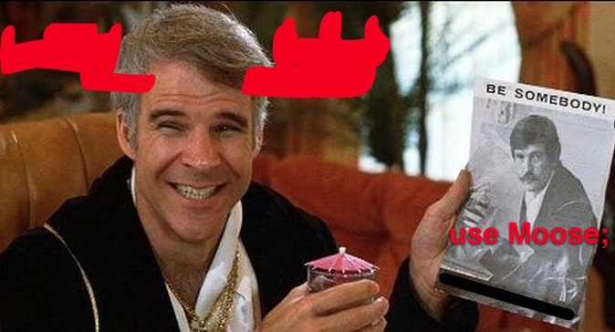
Who is this guy?
- Who is this guy anyway?
- I'm an ex-particle physicist, who somehow learned Perl by mistake in graduate school
- Nowadays, I write in various languages (Perl, C++, Lua, Bash, JavaScript, and yes even PHP)
- I think "The Jerk" is the funniest movie ever made
Why did you write this talk?
Why did you write this talk?
- Doug needed a talk with a more Perl-ish twist than a tap-dancing-frog
- I might not be a tap dancing frog but I've learned some tricks of my own
Why did you write this talk?
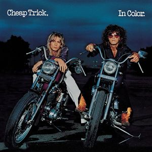
Why did you write this talk?
- After getting used to some nice GUI debugger features when writing Lua and C++
- I got sick of reading debug output, and guessing what *really* happens when my Perl programs are running.
- The standard perl debugger is very good.
- But I got sick of text-based gaming, I mean debugging.
- So I wanted to share some tricks.
Debugging Should be Fun
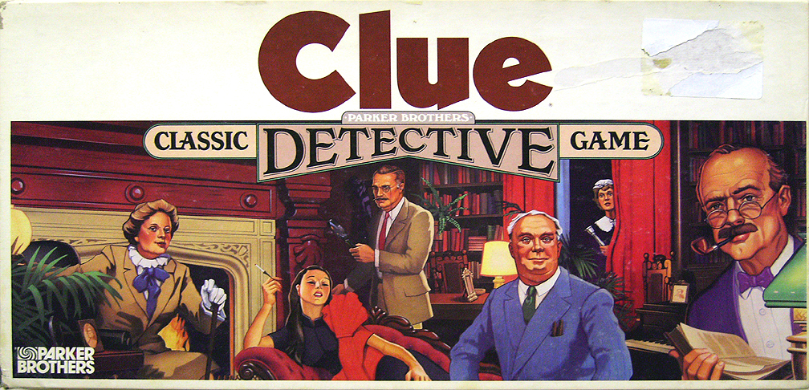
Debugging Should be Fun
- If it's like a game, you'll be more likely to do it
- It can help you understand how new-to-you programs work
- Simply reading code is boring
Perl Debugging for Dummies
Perl Debugging for Dummies
- A debugger should make your life a lot easier
- Just because it's Perl doesn't mean we can't have nice thingsTM
- So how can we get nice thingsTM for debugging Perl programs?
ENTER THE DRAGON

ENTER THE DRAGON
- Not that dragon, the KOMODO dragon!
Komodo IDE to the Rescue
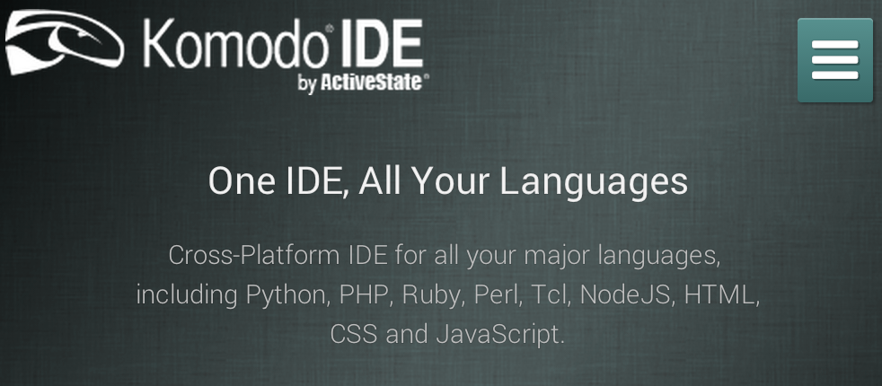
Komodo IDE to the Rescue
- You don't have to change your religion, I mean editor
- I did that once this century, and that's enough (vim => Sublime)
- You can "just" use it for debugging (your main editor never has to know)
Komodo Local Debugging: Setup
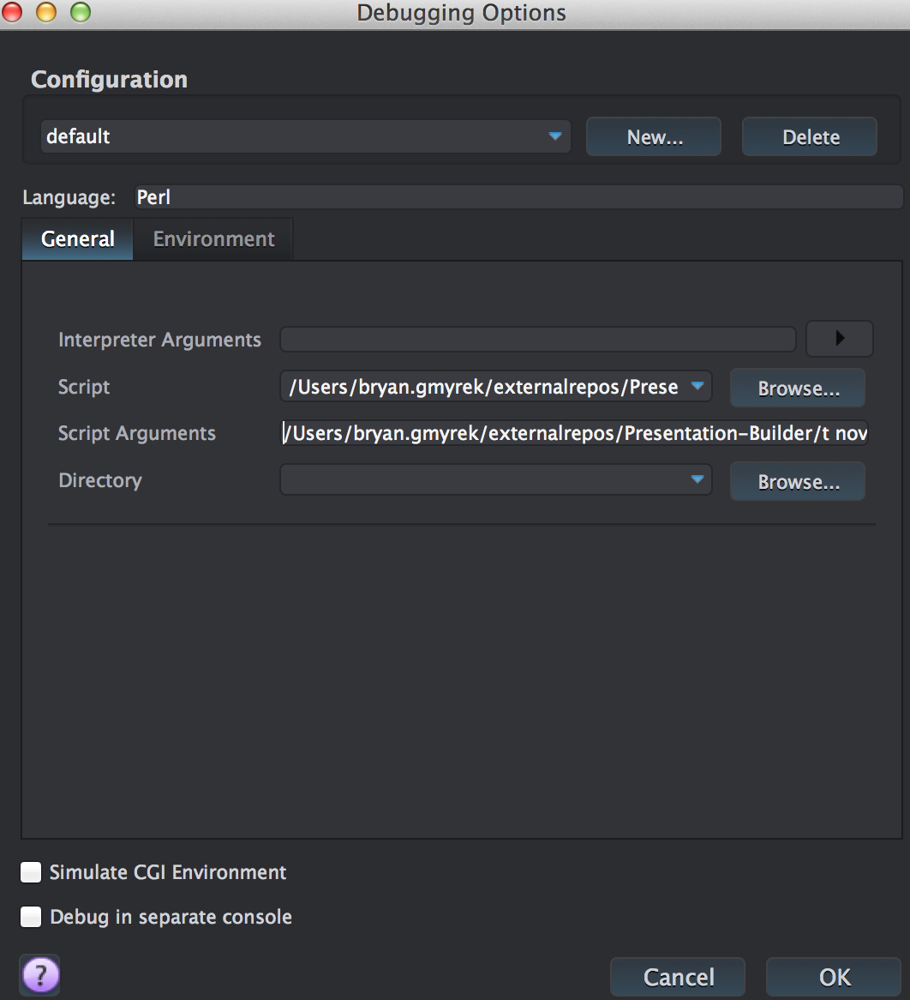
Komodo Local Debugging: Setup
- Project > New Project
- Open the .pl file you want to run
- Debug > Go/Continue
- Enter values in the popup
The Environment Tab
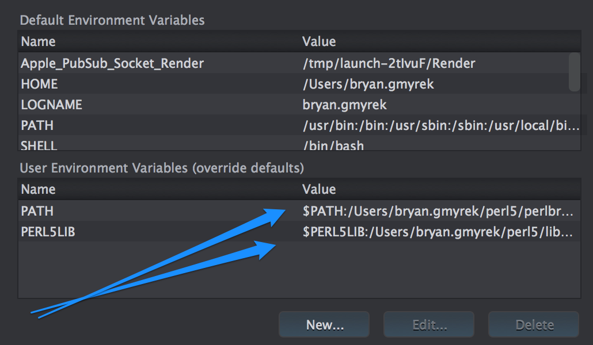
The Environment Tab
- Tweak environment variables
- Add to PATH if your perl is not in the main path
- Can also add any user supplied environment variables you want
- It'll remember this info in the project file
- This is especially useful if you have many library directories for different projects
Debugging Basics: Step Into, Step Over, Step Out
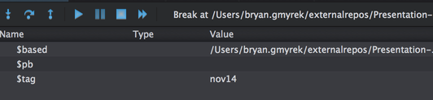
Debugging Basics: Step Into, Step Over, Step Out
- Start and Stop ~ Self explanatory
- Step Into ~ Steps into the function under the cursor (if possible)
- Step Over ~ Steps over line, don't enter functions
- Step Out ~ Return from the current function
- >> Fast Forward ~ Run and ignore break points
Local Debugging: Setting Break Points
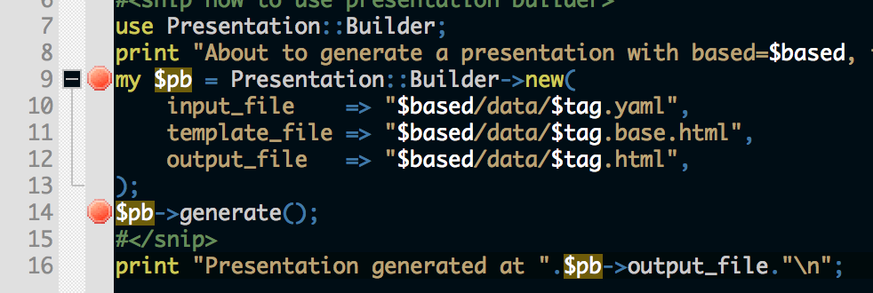
Local Debugging: Setting Break Points
- Just click to the left of a line
- Komodo will remember your break points
- You can view all of them and delete them in the Breakpoints tab
- Try setting one at Section.pm line 37
Finding Gold with $DB::Single
Finding Gold with $DB::Single
- Stepping through is helpful but can be tedious
- Even with clever break point setting
- Oh noes, what happened below
- HASH(0x7fb1654a38b8)
$DB::single=1; to the rescue
override content {
foreach my $pt (@{$self->points}) {
if (UNIVERSAL::isa($pt,'HASH')) {
$DB::single=1;
}
}
$self->html("<ul>\n\t<li>".join("</li>\n\t<li>",@{$self->points})."</li>\n</ul>");
return super();
}
- The program will stop whenever you set $DB::single=1;
- The best part is you can use arbitrary Perl logic to do this
- Which means no learning obscure debugger tool logic, yay
So What Was Wrong?
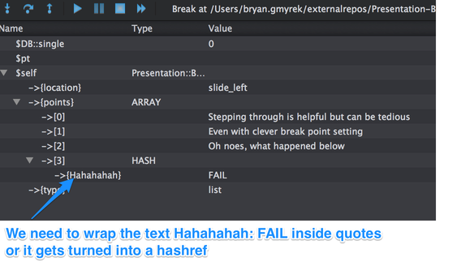
So What Was Wrong?
- nov14.yaml has a line like - Hahahahah: FAIL
- That needs to be wrapped in quotes
- Anyway, this sort of thing can be easier to find with $DB::single
I Want My Money Back!
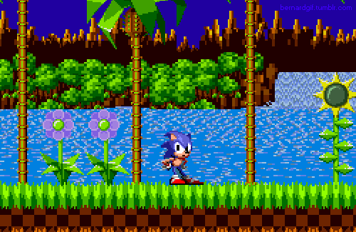
I Want My Money Back!
- I know what you're thinking
- This guy promised to talk about REMOTE debugging
- I'm getting to that, jeesh
Remote Debugging: Some Assembly Required
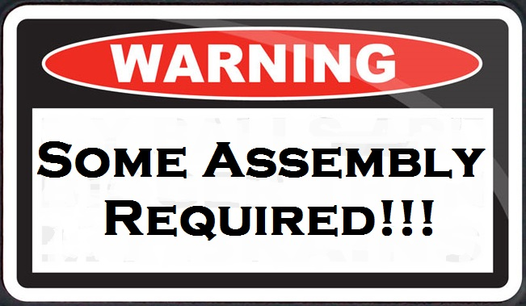
Remote Debugging: Some Assembly Required
- I'm not gonna lie to you
- Some assembly is required
- But do not abandon all hope, it's worth it
- Komodo's Instructions http://bit.ly/1xayWxT
Remote Debugging, Step 1
- remote$ mkdir komodo
- local$ cd /Applications/Komodo IDE 8.app/Contents/SharedSupport/dbgp/perllib/
- local$ rsync -av * bryan.gmyrek@remote-machine.remotedomain.com:./komodo/
komodosetup(){
export PERLDB_OPTS=RemotePort=localhost:58657
export PERL5DB='BEGIN { require q(/home/bryan.gmyrek/komodo/perl5db.pl) }'
export PERL5LIB=$PERL5LIB:/home/bryan.gmyrek/komodo
export DBGP_IDEKEY="bryan.gmyrek"
}
export -f komodosetup
alias perld="komodosetup; perl -d "
Remote Debugging, Step 2
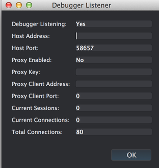
Remote Debugging, Step 2
- Tell Komodo to Listen for Debugger Connections
- Debug > Listen For Debugging Connections
- Add a ssh command with port forwarding alias to your local .bashrc
- alias remotedebug='ssh -R 58657:localhost:58657 bryan.gmyrek@remote-machine.remotedomain.com'
Step 3: Start the Perl Program on the Remote Machine
Step 3: Start the Perl Program on the Remote Machine
- SSH in with your alias, or use -RPORT:localhost:PORT
- Start the program with the 'perld' alias, or with perl -d after setting up the ENV variables
- (Run remote ~/sh/README... example)
- Wait in joyful anticipation for a local Komodo window to open...
Step 4: Profit! I mean, debug!
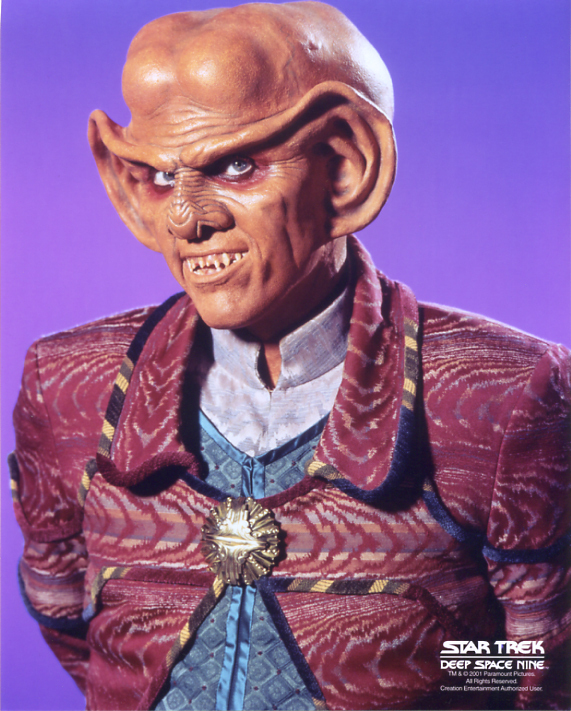
Step 4: Profit! I mean, debug!
- All remote code will show up in your local Komodo session
- How cool is that?
- From here, you can debug like you normally would with a local session
Remote Gotchas
Remote Gotchas
- It's slower, so local testing/debugging is still preferable
- Breakpoints can disappear on the left, but still exist
- See the Breakpoints tab to edit/delete them
Random Musings
Random Musings
- Bitcoin is really cool.
- Megadeth is great for deveoping late into the night.
- Ionic is a pretty sweet framework for cross platform mobile apps.
- Meteor.js looks awesome - anyone played with it?
- Connect with me on LinkedIn if you haven't already -->
- http://linkedin.com/in/physics